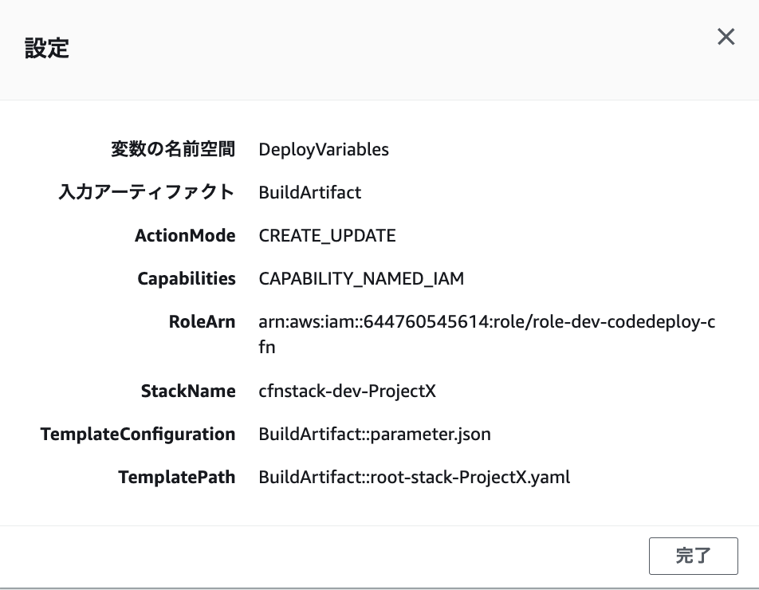

LambdaとEvent作成フロー¶
全体感¶
CodePipelineで実行されるCFNの設定を確認する。こちらに合わせて、ソースコードの準備を行う。
StackName：作成されるスタック名
TemplateConfiguration: 実行されるCFNのテンプレートファイルに渡すparameterの値
TemplatePath：実行されるCFNのテンプレートファイル名

CFNのテンプレートファイル¶
TemplatePathがroot-stack-ProjectXなので、この名前でテンプレートファイルを作成する。
今回は、Lambda/EventBridge/IAMを作成する。
parameter¶
TemplateConfigurationがparameter.jsonなので、この名前でparameterファイルを設定する。
json形式で、root-stackに渡すパラメータを定義する。 環境によって変化する値、例えば環境名(dev/prd)などがある場合はbuildのタイミングで渡すことによって、parameter.jsonを増やさなくて済む。 parameter.jsonに対して、buildのタイミングで操作する場合、その操作内容をbuildspec.yamlで定義しておく。
buildspec.yaml¶
ビルドステージで、実行されるコマンドを定義する。
parameterに環境を埋め込む操作
デプロイステージへtemplateファイルとparameterファイルをArtifactとして渡す
Lambdaの作成¶
まずは、単純にHello Worldを発行するだけのLambdaを作成する。
Lambdaのスタック作成¶
root-stack-ProjectXに対してLambdaとLambdaで利用するRoleを設定する。
AWSTemplateFormatVersion: '2010-09-09'
Description: 'AWS CloudFormation Sample Template: Lambda function with IAM role and Hello World in Python.'
Parameters:
EnvID:
Type: String
AllowedValues: [ dev, stg, prd ]
Resources:
HelloLambdaFunction:
Type: AWS::Lambda::Function
Properties:
FunctionName: !Sub "lambda-${EnvID}-hello"
Handler: index.handler
Role: !GetAtt LambdaExecutionRole.Arn
Code:
ZipFile: |
def handler(event, context):
print("Hello World!")
return "Hello World"
Runtime: python3.8
LambdaExecutionRole:
Type: AWS::IAM::Role
Properties:
AssumeRolePolicyDocument:
Version: '2012-10-17'
Statement:
- Effect: Allow
Principal:
Service: lambda.amazonaws.com
Action: 'sts:AssumeRole'
Policies:
- PolicyName: root
PolicyDocument:
Version: '2012-10-17'
Statement:
- Effect: Allow
Action:
- logs:CreateLogGroup
- logs:CreateLogStream
- logs:PutLogEvents
Resource: '*'
Tags:
-
Key: CreatedBy
Value: !Ref "AWS::StackName"
parameter.json¶
rootstackには、パラメータとして、EnvIDを渡す必要があるので、parameter.jsonを以下のように設定する。 EnvIDの部分は、buildspec.yamlで与える。
{
"Parameters" : {
"EnvID": "EnvID_FROM_BUILD"
}
}
buildspec.yaml¶
parameter.jsonに環境名を渡す設定を行う
$EnvIDはcodebuildを作成する時点で
EnvironmentVariablesとして設定しているのでこれを渡す
Artifactの設定
artifactセクションを設定することで、ここで設定した値がbuildのArtifactとして出力される
pipelineで設定している
OutputArtifactsのBuildArtifactに設定される
version: 0.2
phases:
pre_build:
commands:
- sed -i 's/EnvID_FROM_BUILD/'"$EnvID"'/g' parameter.json
artifacts:
files:
- root-stack-ProjectX.yaml
- parameter.json
codedeploy確認¶
codedeployの設定¶
今回はIAMのRoleを作成するので、CapabilitiesがCAPABILITY_NAMED_IAMになっている必要がある
Configuration:
ActionMode: "CREATE_UPDATE"
Capabilities: "CAPABILITY_NAMED_IAM"
Eventの作成¶
Eventのスタック作成¶
5分ごとにLambdaを呼び出すEventを作成する。
EventBridgeRule:
Type: AWS::Events::Rule
Properties:
EventBusName: default
Name: !Sub "eventbridge-${EnvID}-awake"
ScheduleExpression: cron(*/5 * * * ? *)
State: ENABLED
Targets:
- Arn: !GetAtt HelloLambdaFunction.Arn
Id: HelloLambdaFunction
Lambdaを実行するためには、リソースベースのようにLambda側でPermissionを付与してEventの呼び出しを許可する必要がある。 Event側にLambda Invokeの権限を付与するのは一般的ではないらしい。
# Lambdaに付与するPermission
# Lambdaを呼び出すprincipalを設定することで呼び出しを許可する
PermissionForEventsToInvokeLambda:
Type: AWS::Lambda::Permission
Properties:
FunctionName: !Ref HelloLambdaFunction
Action: lambda:InvokeFunction
Principal: events.amazonaws.com
SourceArn: !GetAtt 'EventBridgeRule.Arn'
トラブルシューティング¶
developmentブランチにマージしたが、Pipelineが実行されない。¶
Eventがうまく動作していない可能性が高いので、確認したいが、EventやPiplieneのページからは実行の履歴を確認できなかった。
CloudTrailを確認するとStartPipelineExecution codepipeline.amazonaws.comを発見。中身は以下。
{
"eventSource": "codepipeline.amazonaws.com",
"eventName": "StartPipelineExecution",
"awsRegion": "ap-northeast-1",
"sourceIPAddress": "events.amazonaws.com",
"userAgent": "events.amazonaws.com",
"errorCode": "AccessDenied",
"errorMessage": "User: arn:aws:sts::XXXXXXXXXXX:assumed-role/role-dev-eventbridge-codepipeline-exec/057ffa15c4983c099eb1f9f09f268001 is not authorized to perform: codepipeline:StartPipelineExecution on resource: arn:aws:codepipeline:ap-northeast-1:XXXXXXXXXXX:codepipeline-dev-cfn-ProjectX because no identity-based policy allows the codepipeline:StartPipelineExecution action",
}
対象のPipelineについて、StartPipelineExecutionの権限がないらしい。
改めて、EventBridgeのPolicyをチェック
EventsCodepipelineExecPolicy:
Type: "AWS::IAM::ManagedPolicy"
Properties:
ManagedPolicyName: !Sub "policy-${EnvID}-eventbridge-codepipeline-exec"
Path: "/"
PolicyDocument:
Version: "2012-10-17"
Statement:
- Effect: Allow
Action:
- codepipeline:StartPipelineExecution
Resource:
- !Sub "arn:aws:events:${AWS::Region}:${AWS::AccountId}:rule/event-rule-${EnvID}-codepipeline-exec-cfn-${ProjectID}" #対象のEventに絞る
Description: "Policy for eventbridge codepipeline exec"
Resourceがイベントになっていた。StartPipelineExecutionするので、ここのResourceはPipelineであるべき。
Resource:
- !Sub arn:aws:codepipeline:${AWS::Region}:${AWS::AccountId}:codepipeline-${EnvID}-cfn-${ProjectID} #対象のPipelineに絞る
Buildでエラー¶
error while downloading key codepipeline-dev-cfn/SourceArti/M4CEgx3, error: AccessDenied: Access Denied
S3に作成されたArtifactにアクセスできてない様子
codeBuildに付与されたPolicyをチェック
CodeBuildCFnPolicy:
Type: "AWS::IAM::ManagedPolicy"
Properties:
ManagedPolicyName: !Sub "policy-${EnvID}-codebuild-cfn"
Path: "/"
PolicyDocument:
Version: "2012-10-17"
Statement:
-
Effect: Allow
Action:
- logs:CreateLogGroup
- logs:CreateLogStream
- logs:PutLogEvents
Resource: "*" #本来はBuildの出力先であるloggroupに絞る
-
Effect: Allow
Action:
- s3:ListBucket
- s3:PutObject
- s3:GetObject
- s3:GetObjectVersion
- s3:GetBucketAcl
- s3:GetBucketLocation
Resource: !Sub "arn:aws:s3:::s3-${EnvID}-codepipeline-artifact" #Codepipelineで指定したArtifactの出力先であるS3に絞る
Description: ""
S3のキーにアクセスするためには、bucket/*が必要なので追加
Resource:
- !Sub "arn:aws:s3:::s3-${EnvID}-codepipeline-artifact" #Codepipelineで指定したArtifactの出力先であるS3に絞る
- !Sub "arn:aws:s3:::s3-${EnvID}-codepipeline-artifact/*" #Codepipelineで指定したArtifactの出力先であるS3に絞る
CFNの実行時にエラー¶
Unknown property [[EnvID]] in template configuration
TemplateConfigurationが間違っているっぽいので、確認する。S3にあるbuildArtiを確認すると以下
{
"EnvID": "dev"
}
公式ドキュメントのサンプルをDLすると、Templateconfigは以下で設定する。
{
"Parameters" : {
"EnvID": "dev"
}
}